Curriculum vitae
Cecil Chern-Chyi Yen
PhD, MS
Staff Scientist and Facility Manager, Neurophysiology Imaging Facility, National Institute of Mental Health, NIH
Professional profiles & contact
Functional MRI | cortical microcirculation | translational neuroscience
Cecil Chern-Chyi Yen is an NIH staff scientist and imaging facility manager specializing in preclinical MRI/fMRI, awake marmoset neuroimaging, cortical microcirculation, multimodal imaging, and translational neuroscience. His work combines high-field imaging methods with facility leadership to support reproducible acquisition, analysis, and collaborative biomedical research.
01 / Overview
Research & leadership
Research contributions
- Awake marmoset fMRI: Functional mapping, large-scale brain networks, and open functional-connectivity resources.
- Brain atlases and connectomics: Multimodal templates, white-matter pathways, and integrated structural and functional connectivity.
- Cortical physiology: Laminar fMRI, cortical microcirculation, and the spatial and temporal characteristics of hemodynamic responses.
- High-field MRI methods: Radiofrequency coil arrays, pulse-sequence development, and acquisition optimization for preclinical imaging.
- Translational neuroimaging: MRI and PET approaches for studying demyelination, remyelination, and neurological disease models.
Facility leadership
- Platform stewardship: Coordinate high-field MRI and complementary PET/CT, CT, optical, and two-photon imaging capabilities.
- Study support: Consult on experimental setup, imaging protocols, acquisition strategy, and image-analysis workflows.
- Methods development: Optimize pulse sequences, conversion pipelines, analysis tools, and imaging support hardware.
- Training and reproducibility: Support researchers with practical platform training, documented workflows, and consistent data handling.
Imaging focus
- High-field Bruker and Varian MRI platforms for preclinical imaging.
- Functional, structural, diffusion, PET/CT, CT, optical, and two-photon imaging workflows.
- Animal models spanning marmosets, mice, rats, pigs, and cats.
Methods & analysis
- Pulse-sequence programming, Bash, Python, and MATLAB.
- DICOM/NIfTI conversion and analysis with AFNI, FSL, SPM, ImageJ, MIPAV, ITK-SNAP, and MRICro.
- 3D modeling and 3D printing workflows for imaging support hardware.
02 / Background
Professional background
Experience
- 2019-present
- Staff Scientist / Facility Manager
Neurophysiology Imaging Facility, NIMH, National Institutes of Health
- 2016-2019
- Research Fellow / MRI Physicist
Cerebral Microcirculation Section, LFMI, NINDS, National Institutes of Health
- 2011-2016
- Postdoctoral Fellow
Cerebral Microcirculation Section, LFMI, NINDS, National Institutes of Health
- 2005-2011
- Graduate Student Researcher
Neuroimaging Laboratory, Department of Neurology, University of Pittsburgh Medical Center
- 2004-2005
- Research Assistant
Functional and Micro-Magnetic Resonance Imaging Center, Academia Sinica
- 2002-2003
- Graduate Student Researcher
Magnetic Resonance Research Center, Department of Radiology, University of Pittsburgh Medical Center
- 1998-1999
- Undergraduate Research Assistant
Laser Spectroscopy Laboratory, Department of Physics, National Tsing-Hua University
Education
- 2011-2016
- Postdoctoral Training, Cerebral Microcirculation Section, LFMI, NINDS
National Institutes of Health, Bethesda, MD, USA
- 2005-2011
- Ph.D., Bioengineering, Biosignals and Imaging Track
University of Pittsburgh, Pittsburgh, PA, USA
- 2001-2003
- M.S., Electrical Engineering
University of Pittsburgh, Pittsburgh, PA, USA
- 1995-1999
- B.S., Physics
National Tsing-Hua University, Hsin-Chu, Taiwan
Awards
- 2010
- ISMRM Student Stipend Award
International Society for Magnetic Resonance in Medicine, Stockholm, Sweden
- 2009
- ISMRM Student Stipend Award
International Society for Magnetic Resonance in Medicine, Honolulu, USA
- 2004
- Chinese Studies Tuition Remission Scholarship
Asian Studies Center, University of Pittsburgh
- 2003
- ISMRM Student Stipend Award
International Society for Magnetic Resonance in Medicine, Toronto, Canada
Professional memberships
- International Society for Magnetic Resonance in Medicine (ISMRM)
- Society for Neuroscience (SfN)
- North America Taiwanese Professors' Association (NATPA)
03 / Expertise
Research & technical skills
- In vivo imaging modalities
- Bruker MRI (4.7T/40cm, 7T/30cm, vertical 9.4T/9cm, vertical 14T/9cm), Varian MRI (9.4T/31cm), GE MRI, Bruker CT, Inveon PET/CT, Zeiss Two-photon microscope, Intrinsic optical Imaging (in cat visual cortex)
- Programming languages
- Pulse sequence programming of Varian and Bruker (ParaVision Programming Course), Bash shell script, Python, Matlab
- Imaging processing
- Orthanc DICOM Server, NIfTI Converters, FSL, AFNI, SPM, ImageJ, MRICro, MIPAV, ITKSnap, Rhinoceros3D (3D modeling), Cura (3D printing)
- Animal models
- Cardiac functions of pigs, Visual system of cats, Brain functions of marmosets, Stroke and drug addiction in rats, Genetic models of mice and marmosets
These capabilities support NIH preclinical imaging workflows, including animal-model study setup, MRI/fMRI acquisition, image conversion, processing, analysis, visualization, and reproducible imaging data handling.
04 / Publications
Selected publications
31 papers8 conference abstracts
Peer-reviewed publications
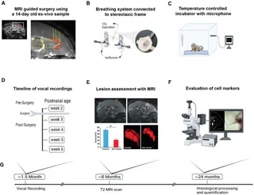
Figure 1 Nagarajan, G., et al., Cingulate cortex shapes early postnatal development of social vocalizations. Elife, 2025. 13: p. RP97125.
doi:10.7554/eLife.97125Drazan, T.M., et al., Neurobiology of pregnancy and the postpartum period in the common marmoset. Psychoneuroendocrinology, 2023. 153: p. 106208.
doi:10.1016/j.psyneuen.2023.106208Saleem, K.S., et al., Multimodal anatomical mapping of subcortical regions in marmoset monkeys using high-resolution MRI and matched histology with multiple stains. Neuroimage, 2023. 281: p. 120311.
doi:10.1016/j.neuroimage.2023.120311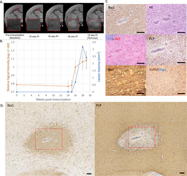
Figure 1 Donadieu, M., et al., In vivo MRI is sensitive to remyelination in a nonhuman primate model of multiple sclerosis. Elife, 2023. 12.
doi:10.7554/eLife.73786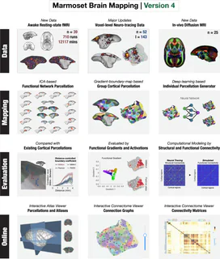
Figure 1 Tian, X., et al., An integrated resource for functional and structural connectivity of the marmoset brain. Nature Communications, 2022. 13(1): p. 7416.
doi:10.1038/s41467-022-35197-2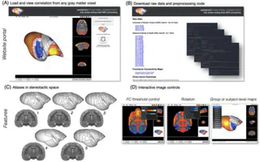
Figure 1 Schaeffer, D.J., et al., An open access resource for functional brain connectivity from fully awake marmosets. NeuroImage, 2022. 252: p. 119030.
doi:10.1016/j.neuroimage.2022.119030Avram, A.V., et al., High-resolution cortical MAP-MRI reveals areal borders and laminar substructures observed with histological staining. NeuroImage, 2022. 264: p. 119653.
doi:10.1016/j.neuroimage.2022.119653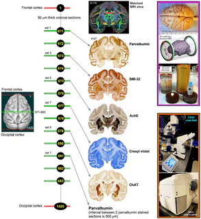
Figure 1 Saleem, K.S., et al., High-resolution mapping and digital atlas of subcortical regions in the macaque monkey based on matched MAP-MRI and histology. Neuroimage, 2021. 245: p. 118759.
doi:10.1016/j.neuroimage.2021.118759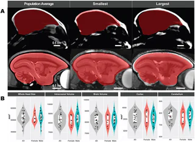
Figure 1 Liu, C., et al., Marmoset Brain Mapping V3: Population multi-modal standard volumetric and surface-based templates. Neuroimage, 2021. 226: p. 117620.
doi:10.1016/j.neuroimage.2020.117620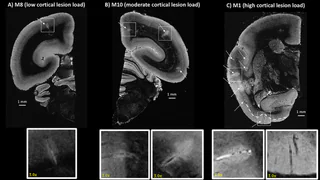
Figure 1 Donadieu, M., et al., Ultrahigh-resolution MRI reveals extensive cortical demyelination in a nonhuman primate model of multiple sclerosis. Cerebral Cortex, 2021. 31(1): p. 439-447.
doi:10.1093/cercor/bhaa235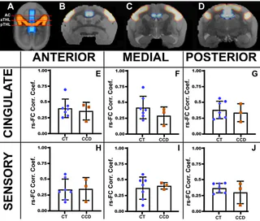
Figure 3 Szczupak, D., et al., Dynamic interhemispheric desynchronization in marmosets and humans with disorders of the corpus callosum. Frontiers in Neural Circuits, 2020. 14: p. 612595.
doi:10.3389/fncir.2020.612595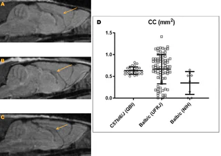
Figure 1 Szczupak, D., et al., Long-distance aberrant heterotopic connectivity in a mouse strain with a high incidence of callosal anomalies. NeuroImage, 2020. 217: p. 116875.
doi:10.1016/j.neuroimage.2020.116875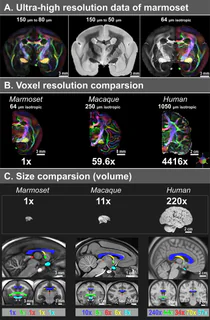
Figure 1 Liu, C., et al., A resource for the detailed 3D mapping of white matter pathways in the marmoset brain. Nature neuroscience, 2020. 23(2): p. 271-280.
doi:10.1038/s41593-019-0575-0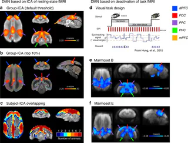
Figure 1 Liu, C., et al., Anatomical and functional investigation of the marmoset default mode network. Nature communications, 2019. 10(1): p. 1975.
doi:10.1038/s41467-019-09813-7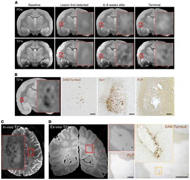
Figure 1 Lee, N.J., et al., Potential role of iron in repair of inflammatory demyelinating lesions. The Journal of clinical investigation, 2019. 129(10): p. 4365-4376.
doi:10.1172/JCI126809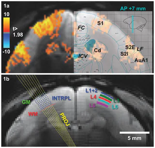
Figure 1 Yen, C.C.-C., D. Papoti, and A.C. Silva, Investigating the spatiotemporal characteristics of the deoxyhemoglobin-related and deoxyhemoglobin-unrelated functional hemodynamic response across cortical layers in awake marmosets. Neuroimage, 2018. 164: p. 121-130.
doi:10.1016/j.neuroimage.2017.03.005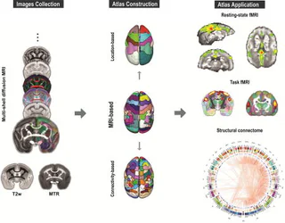
Figure Liu, C., et al., A digital 3D atlas of the marmoset brain based on multi-modal MRI. Neuroimage, 2018. 169: p. 106-116.
doi:10.1016/j.neuroimage.2017.12.004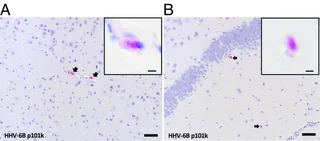
Figure 1 Leibovitch, E.C., et al., Herpesvirus trigger accelerates neuroinflammation in a nonhuman primate model of multiple sclerosis. Proceedings of the National Academy of Sciences of the United States of America, 2018. 115(44): p. 11292-11297.
doi:10.1073/pnas.1811974115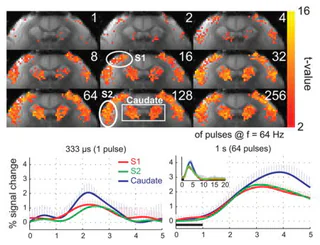
Figure Hirano, Y., et al., Investigation of the BOLD and CBV fMRI responses to somatosensory stimulation in awake marmosets (Callithrix jacchus). Nmr in Biomedicine, 2018. 31(3).
doi:10.1002/nbm.3864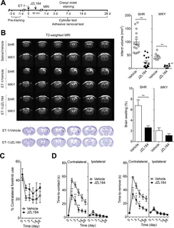
Figure 1 Choi, S.H., et al., Neuroprotective Effects of MAGL (Monoacylglycerol Lipase) Inhibitors in Experimental Ischemic Stroke. Stroke, 2018.
doi:10.1161/STROKEAHA.117.019664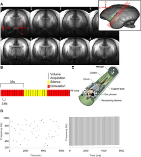
Figure 1 Toarmino, C.R., et al., Functional magnetic resonance imaging of auditory cortical fields in awake marmosets. Neuroimage, 2017. 162: p. 86-92.
doi:10.1016/j.neuroimage.2017.08.052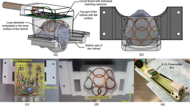
Figure 1 Papoti, D., et al., Design and implementation of embedded 8‐channel receive‐only arrays for whole‐brain MRI and fMRI of conscious awake marmosets. Magnetic resonance in medicine, 2017. 78(1): p. 387-398.
doi:10.1002/mrm.26339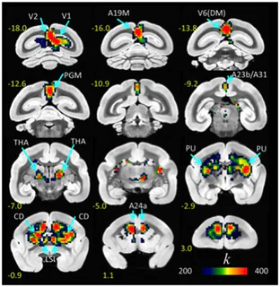
Figure 1 Belcher, A.M., et al., Functional Connectivity Hubs and Networks in the Awake Marmoset Brain. Frontiers in Integrative Neuroscience, 2016. 10.
doi:10.3389/fnint.2016.00009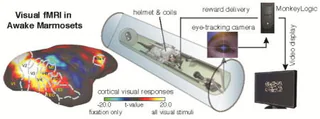
Figure Hung, C.C., et al., Functional MRI of visual responses in the awake, behaving marmoset. Neuroimage, 2015. 120: p. 1-11.
doi:10.1016/j.neuroimage.2015.06.090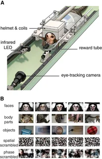
Figure 1 Hung, C.-C., et al., Functional Mapping of Face-Selective Regions in the Extrastriate Visual Cortex of the Marmoset. Journal of Neuroscience, 2015. 35(3): p. 1160-1172.
doi:10.1523/JNEUROSCI.2659-14.2015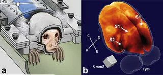
Figure 1 Papoti, D., et al., An embedded four‐channel receive‐only RF coil array for fMRI experiments of the somatosensory pathway in conscious awake marmosets. NMR in Biomedicine, 2013. 26(11): p. 1395-1402.
doi:10.1002/nbm.2965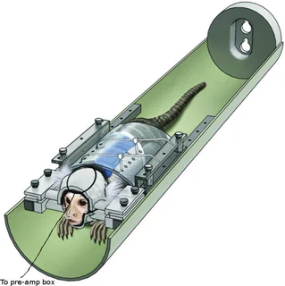
Figure 1 Belcher, A.M., et al., Large-Scale Brain Networks in the Awake, Truly Resting Marmoset Monkey. Journal of Neuroscience, 2013. 33(42): p. 16796-16804.
doi:10.1523/JNEUROSCI.3146-13.2013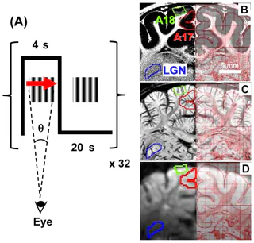
Figure 1 Yen, C.C.-C., M. Fukuda, and S.-G. Kim, BOLD responses to different temporal frequency stimuli in the lateral geniculate nucleus and visual cortex: Insights into the neural basis of fMRI. Neuroimage, 2011. 58(1): p. 82-90.
doi:10.1016/j.neuroimage.2011.06.022Hsu, Y.-H., et al., Neuronal dysfunction of a long projecting multisynaptic pathway in response to methamphetamine using manganese-enhanced MRI. Psychopharmacology, 2008. 196: p. 543-553.
doi:10.1007/s00213-007-0990-xHsu, J.T., et al. Application of wavelet-based POCS super-resolution for cardiovascular MRI image enhancement. in Third International Conference on Image and Graphics (ICIG'04). 2004. IEEE.
doi:10.1109/ICIG.2004.38Wang, Y., et al., Quantitative evaluation of susceptibility and shielding effects of nitinol, platinum, cobalt-alloy, and stainless steel stents. Magn Reson Med, 2003. 49(5): p. 972-6.
doi:10.1002/mrm.10450
Conference abstracts
Donadieu, M., et al. Combined [18 F] 3-fluoro-4-aminopyridine PET and MRI as Surrogate of Demyelination in EAE Marmoset. in MULTIPLE SCLEROSIS JOURNAL. 2025. SAGE PUBLICATIONS LTD 1 OLIVERS YARD, 55 CITY ROAD, LONDON EC1Y 1SP, ENGLAND.
Donadieu, M., et al. Voxelwise Quantitative T1 to Study Demyelination and Remyelination in Marmoset EAE. in MULTIPLE SCLEROSIS JOURNAL. 2024. 30(1): p. 122-123.
Donadieu, M., et al. In Vivo MRI to Detect Potential Remyelination in a Nonhuman Primate Model of Multiple Sclerosis. in MULTIPLE SCLEROSIS JOURNAL. 2023. 29: p. 131-131.
Donadieu, M., et al. Ultra-high-resolution MRI to study onset and evolution of cortical lesions in nonhuman primate model of multiple sclerosis. in MULTIPLE SCLEROSIS JOURNAL. 2022. SAGE PUBLICATIONS LTD 1 OLIVERS YARD, 55 CITY ROAD, LONDON EC1Y 1SP, ENGLAND.
Sati, P., et al. Imaging spontaneous remyelination in a nonhuman primate model of MS. in MULTIPLE SCLEROSIS JOURNAL. 2019. SAGE PUBLICATIONS LTD 1 OLIVERS YARD, 55 CITY ROAD, LONDON EC1Y 1SP, ENGLAND.
Yen, C., D. Papoti, and A. Silva, Investigating the Spatiotemporal Characteristics of the BOLD and the Non-BOLD Response Across Cortical Layers in Awake Marmosets. Journal of Cerebral Blood Flow and Metabolism, 2016. 36: p. 121-122.
Leibovitch, E., et al., Herpesvirus trigger accelerates a neuroinflammatory demyelinating disease in a nonhuman primate model of multiple sclerosis. Journal of Neurovirology, 2016. 22: p. S42.
Hung, C., et al., Neural responses to naturalistic movies in the common marmoset using electrocorticography and fMRI. Journal of vision, 2015. 15(12): p. 580.
doi:10.1167/15.12.580
05 / Development
Talks & training
Seminars & lectures
- 2017
- Oral Presentation, Title: Investigating the Cerebral Cortical Hemodynamic Regulation in Awake Marmosets
Advances in Functional Studies of Marmoset Brain, Melbourne, Australia
- 2017
- Institutional lecture, Title: Anatomical and Functional Neuroimaging in Animal Models
NIH fMRI Summer Course, Bethesda, USA
- 2015
- Oral Presentation, Title: Investigating the Spatiotemporal Characteristics of the BOLD and the Non-BOLD Response Across Cortical Layers in Awake Marmosets
International Society for Cerebral Blood Flow & Metabolism, Vancouver, Canada
- 2014
- Seminar at Magnet Resonance Center, Title: Cerebral Cortical Hemodynamic Regulation Investigated by Functional MRI
Max Planck Institute for Biological Cybernetics, Tubingen, Germany
- 2014
- Seminar at Laboratory of Marmoset Neural Architecture, Title: Cerebral Cortical Hemodynamic Regulation Investigated by Functional MRI
RIKEN Brain Science Institute, Hirosawa Wako City, Japan
- 2014
- Departmental seminar, Title: Advances in Functional and Structural MRI of the Brain
National Cheng Kung University, Tainan, Taiwan
- 2013
- Educational Course in Brain Conference, Title: Advances in Functional and Structural MRI of the Brain
International Society for Cerebral Blood Flow and Metabolism, Shanghai, China
- 2013
- Seminar at Hoglund Brain Imaging Center, Title: Brain Function and Cortical Microcirculation Investigated by Translational MRI
University of Kansas Medical Center, Kansas City, USA
- 2011
- Seminar at Magnetic Resonance Research Center, Title: Areal and Laminar fMRI Studies of the Early Visual System: Dependence on Temporal Frequency of Stimulus
Yale University, New Haven, USA
Training & workshops
- 2017
- Python for MATLAB Users and Python in HPC
National Institutes of Health, Bethesda, MD
- 2015
- Computational neuroimaging workshops: MIPAV, Tortoise
National Institutes of Health, Bethesda, MD
- 2015
- Grant Writing Workshops
National Institutes of Health, Bethesda, MD
- 2014
- Industry and Academic Careers Workshop Series
National Institutes of Health, Bethesda, MD
- 2013
- Leadership, Management, and Mentoring Workshop Series
National Institutes of Health, Bethesda, MD
- 2012
- AFNI Bootcamp
National Institutes of Health, Bethesda, MD
- 2012
- Scientific Writing Workshops
National Institutes of Health, Bethesda, MD
- 2011
- ParaVision Programming Course
Bruker Corporation, Billerica, MA
- 2010
- ISMRM Educational Courses
International Society for Magnetic Resonance in Medicine, Stockholm, Sweden
- 2010
- Topical Multimodal Neuroimaging Symposium: Visual Cognition and Computation
Multimodal Neuroimaging Training Program, Pittsburgh, USA
- 2009
- Topical Multimodal Neuroimaging Symposium: Decision Making
Multimodal Neuroimaging Training Program, Pittsburgh, USA
- 2009
- ISMRM Educational Courses
International Society for Magnetic Resonance in Medicine, Honolulu, USA
- 2008
- Topical Multimodal Neuroimaging Symposium: Brain Development
Multimodal Neuroimaging Training Program, Pittsburgh, USA
- 2007
- Topical Multimodal Neuroimaging Symposium: Alzheimer's Disease
Multimodal Neuroimaging Training Program, Pittsburgh, USA
- 2006
- Varian (Agilent) On-site Training
Neuroimaging Laboratory, Pittsburgh, USA
- 2003
- ISMRM Educational Courses
International Society for Magnetic Resonance in Medicine, Toronto, Canada
06 / Service
Mentorship & service
Mentorship
- 2012-2014 Jennifer Lynn Ciuchta, Postbaccalaureate Student, NIH, USA; Current: Physician at Mount Sinai Health System
- 2012-2017 Camille Rose Toarmino, Intern PhD Student, UC San Diego, USA; Current: Data Scientist at SpotHero
- 2014-2015 Lucia Diane Notardonato, Postbaccalaureate Student, NIH, USA; Current: Oncology Fellow at University of Illinois Hospital
- 2015-2017 Wen-Yang Chiang, PhD Student, Texas A&M University, USA; Current: Senior Electrical Engineer at Eyas Medical Imaging
- 2017 Chia-Chu Chou, Intern PhD Student, University of Maryland, USA; Current: Software Engineer at Ambarella
Professional service
- 2023-2024
- Communication officer
NINDS Staff Scientist and Clinician Association
- 2022-present
- Institutional representative
NIH Staff Scientist Organization
- 2020-2023
- Member
Neurophysiology Imaging Facility steering committee
- 2014-present
- Reviewer
NMR in Biomedicine, NeuroImage, Journal of Neuroscience Methods, ISMRM, Frontiers in Neuroscience, Nature Protocols, Journal of Alzheimer's Disease, Scientific Reports, Heliyon
- 2011, 2012
- Poster Judge, Postbac Poster Day
National Institutes of Health, Bethesda, MD, USA
- 2011-present
- Committee Member
NIH Taiwanese Association
- 2002-2004
- Web Master, University Chinese Club of Pittsburgh
University of Pittsburgh, Pittsburgh, PA, USA
- 1998-1999
- Treasurer, Tsing-Hua Educational Broadcast Station
National Tsing-Hua University, Hsin-Chu, Taiwan
- 1997-1998
- Student Manager, Movie Service of Student Affairs
National Tsing-Hua University, Hsin-Chu, Taiwan
- 1996, 1997
- Instructor, Physics Summer Camp for High School Students
National Tsing-Hua University, Hsin-Chu, Taiwan
Teaching & military experience
- 2007
- Teaching Assistant, BioInstrument
Department of Bioengineering, University of Pittsburgh
- 2006
- Teaching Assistant, Linear Systems and Electronics
Department of Bioengineering, University of Pittsburgh
- 1999-2001
- Second Lieutenant, Forward Observation Officer
Republic of China Army, Tao-Yuan, Taiwan